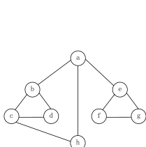
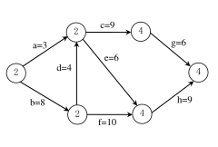
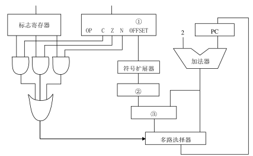
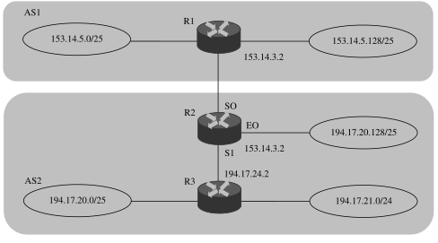
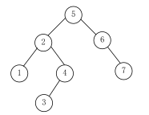
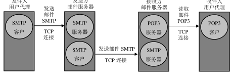
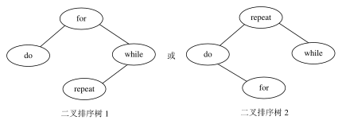

第 1 题 #
1. 已知两个长度分别为m 和n 的升序链表，若将它们合并为一个长度为m+n 的降序链表，则
最坏情况下的时间复杂度是
A. \displaystyle O(n) B. \displaystyle O(mn) C. \displaystyle O(\displaystyle \min(m,n)) D. \displaystyle O(\displaystyle \max(m,n))
408 计算机统考 · complete · 2013
题号和章节目录由结构化数据生成。选项按卷面字母顺序显示；原标记保留在 JSON 中。
1. 已知两个长度分别为m 和n 的升序链表，若将它们合并为一个长度为m+n 的降序链表，则
最坏情况下的时间复杂度是
A. \displaystyle O(n) B. \displaystyle O(mn) C. \displaystyle O(\displaystyle \min(m,n)) D. \displaystyle O(\displaystyle \max(m,n))
2. 一个栈的入栈序列为 \displaystyle 1,2,3,\ldots,n，其出栈序列是 \displaystyle p_1,p_2,p_3,\ldots,p_n。若 \displaystyle p_2=3，则 \displaystyle p_3 可能取值
的个数是 A. \displaystyle n-3 B. \displaystyle n-2 C. \displaystyle n-1 D. 无法确定
3. 若将关键字1，2，3，4，5，6，7 依次插入到初始为空的平衡二叉树T 中，则T 中平衡因
子为0 的分支结点的个数是 A. 0 B. 1 C. 2 D. 3
4. 已知三叉树T 中6 个叶结点的权分别是2，3，4，5，6，7，T 的带权（外部）路径长度最小是 A. 27 B. 46 C. 54 D. 56
B
利用三叉树的6个叶子结点的权构建最小带权生成树，最小的带权路径长度为 \(\displaystyle (2+3)\times3+(4+5)\times2+(6+7)\times1=46\) 。
5. 若X 是后序线索二叉树中的叶结点，且X 存在左兄弟结点Y，则X 的右线索指向的是
A. X 的父结点 B. 以Y 为根的子树的最左下结点
C. X 的左兄弟结点Y D. 以Y 为根的子树的最右下结点
A
根据后续线索二叉树的定义，X 结点为叶子结点且有左兄弟，那么这个结点为右孩子结点，利用后续遍历的方式可知X 结点的后继是其父结点，即其右线索指向的是父结点。
6. 在任意一棵非空二叉排序树T1 中，删除某结点v 之后形成二叉排序树T2，再将v 插入T2 形
成二叉排序树T3。下列关于T1 与T3 的叙述中，正确的是 I. 若v 是T1 的叶结点，则T1 与T3 不同 II. 若v 是T1 的叶结点，则T1 与T3 相同
III. 若v 不是T1 的叶结点，则T1 与T3 不同 IV. 若v 不是T1 的叶结点，则T1 与T3 相同 A. 仅I、III B. 仅I、IV C. 仅II、III D. 仅II、IV
C
在一棵二叉排序树中删除一个结点后再将此结点插入到二叉排序树中，如果删除的结点是叶子结点，那么在插入结点后，后来的二叉排序树与删除结点之前相同。如果删除的结点不是叶子结点，那么再插入这个结点后，后来的二叉树可能发生变化，不完全相同。
7. 设图的邻接矩阵A 如下所示。各顶点的度依次是
\displaystyle A=\begin{pmatrix}0&1&0&1\\0&0&1&1\\0&1&0&0\\1&0&0&0\end{pmatrix}
A. 1，2，1，2 B. 2，2，1，1 C. 3，4，2，3 D. 4，4，2，2
8. 若对如下无向图进行遍历，则下列选项中，不．是广度优先遍历序列的是
A. h，c，a，b，d，e，g，f B. e，a，f，g，b，h，c，d C. d，b，c，a，h，e，f，g D. a，b，c，d，h，e，f，g

9. 下列AOE 网表示一项包含8 个活动的工程。通过同时加快若干活动的进度可以缩短整个工
程的工期。下列选项中，加快其进度就可以缩短工程工期的是

A.c 和e B. d 和e C. f 和d D. f 和h
10. 在一株高度为2 的5 阶B 树中，所含关键字的个数最少是
A.5 B. 7 C. 8 D. 14
11. 对给定的关键字序列110，119，007，911，114，120，122 进行基数排序，则第2 趟分配收集后得到的关键字序列是 A. 007，110，119，114，911，120，122 B. 007，110，119，114，911，122，120
C. 007，110，911，114，119，120，122 D. 110，120，911，122，114，007，119
12. 某计算机主频为1.2 GHz，其指令分为4 类，它们在基准程序中所占比例及CPI 如下表所
示。
| 指令类型 | 所占比例 | CPI |
| A | 50% | 2 |
| B | 20% | 3 |
| C | 10% | 4 |
| D | 20% | 5 |
该机的MIPS 数是 A. 100 B. 200 C. 400 D. 600
C
基准程序的 \(\displaystyle \mathrm{CPI}=2\times0.5+3\times0.2+4\times0.1+5\times0.2=3\) ，计算机的主频为 1.2 GHz，即 1200 MHz，该机器的 MIPS 为 \(\displaystyle 1200/3=400\) 。
13. 某数采用IEEE 754 单精度浮点数格式表示为C640 0000H，则该数的值是
A. \displaystyle -1.5\times2^{13} B. \displaystyle -1.5\times2^{12} C. \displaystyle -0.5\times2^{13} D. \displaystyle -0.5\times2^{12}
A
IEEE 754 单精度浮点数格式为C640 0000H，二进制格式为1100 0110 0100 0000 0000 0000 0000 0000，转换为标准的格式为： S 阶码 尾数 1 1000 1100 100 0000 0000 0000 0000 0000 因此，浮点数的值为 \(\displaystyle -1.5\times2^{13}\) 。
14. 某字长为8 位的计算机中，已知整型变量x、y 的机器数分别为[x]补=1 1110100，[y]补=1
0110000。若整型变量z=2*x+y/2，则z 的机器数为 A. 1 1000000 B. 0 0100100 C. 1 0101010 D. 溢出
15. 用海明码对长度为8 位的数据进行检/纠错时，若能纠正一位错。则校验位数至少为
A. 2 B. 3 C. 4 D. 5
C
设校验位的位数为 \(\displaystyle k\) ，数据位的位数为 \(\displaystyle n\) ，应满足 \(\displaystyle 2^k\ge n+k+1\) 。 \(\displaystyle n=8\) ，当 \(\displaystyle k=4\) 时， \(\displaystyle 2^4=16>8+4+1=13\) 符合要求，校验位至少是4位。
16. 某计算机主存地址空间大小为256 MB，按字节编址。虚拟地址空间大小为4 GB，采用页式存储管理，页面大小为4 KB，TLB（快表）采用全相联映射，有4 个页表项，内容如下表所示。
| 有效位 | 标记 | 页框号 | … |
| 0 | FF180H | 0002H | … |
| 1 | 3FFF1H | 0035H | … |
| 0 | 02FF3H | 0351H | … |
| 1 | 03FFFH | 0153H | … |
则对虚拟地址03FF F180H 进行虚实地址变换的结果是 A. 015 3180H B. 003 5180H C. TLB 缺失 D. 缺页
A
虚拟地址为03FF F180H，其中页号为03FFFH，页内地址为180H，根据题目中给出的页表项可知页标记为03FFFH 所对应的页框号为0153H，页框号与页内地址之和即为物 理地址015 3180 H。
17. 假设变址寄存器R 的内容为1000H，指令中的形式地址为2000 H；地址1000H 中的内容为2000H，地址2000H 中的内容为3000H，地址3000 H 中的内容为4000H，则变址寻址方式下访问到的操作数是
A. 1000H B. 2000H C. 3000H D. 4000 H
D
根据变址寻址的主要方法，变址寄存器的内容与形式地址的内容相加之后，得到操作数的实际地址，根据实际地址访问内存，获取操作数4000H。 第17题变址寻址过程
18. 某CPU 主频为1.03 GHz，采用4 级指令流水线，每个流水段的执行需要1 个时钟周期。
假定CPU执行了100条指令，在其执行过程中，没有发生任何流水线阻塞，此时流水线的吞吐率为 A. \displaystyle 0.25\times10^9 条指令/秒 B. \displaystyle 0.97\times10^9 条指令/秒 C. \displaystyle 1.0\times10^9 条指令/秒 D. \displaystyle 1.03\times10^9 条指令/秒
C
采用4级流水执行100条指令，在执行过程中共用 \(\displaystyle 4+(100-1)=103\) 个时钟周期。 CPU 的主频是1.03 GHz，也就是说每秒钟有1.03 G个时钟周期。流水线的吞吐率为 \(\displaystyle 1.03\times10^9\times100/103=1.0\times10^9\) 条指令/秒。
19. 下列选项中，用于设备和设备控制器（I/O 接口）之间互连的接口标准是 A. PCI B. USB C. AGP D. PCI-Express
20. 下列选项中，用于提高RAID 可靠性的措施有 I. 磁盘镜像 II. 条带化 III. 奇偶校验 IV. 增加Cache 机制 A.仅I、II B. 仅I、III C. 仅I、III 和IV D. 仅II、III 和IV
21. 某磁盘的转速为10 000 转/分，平均寻道时间是6 ms，磁盘传输速率是20 MB/s，磁盘控
制器延迟为0.2 ms，读取一个4 KB 的扇区所需的平均时间约为 A. 9 ms B. 9.4 ms C. 12 ms D. 12.4 ms
B
磁盘转速是10 000 转/分钟，平均转一转的时间是6 ms，因此平均查询扇区的时间是3 ms，平均寻道时间是6 ms，读取4 KB 扇区信息的时间为0.2 ms，信息延迟的时间为 0.2 ms，总时间为3+6+0.2+0.2=9.4 ms。
22. 下列关于中断I/O 方式和DMA 方式比较的叙述中，错误 ．．的是
A. 中断I/O 方式请求的是CPU 处理时间，DMA 方式请求的是总线使用权 B. 中断响应发生在一条指令执行结束后，DMA 响应发生在一个总线事务完成后 C. 中断I/O 方式下数据传送通过软件完成，DMA 方式下数据传送由硬件完成
D. 中断I/O 方式适用于所有外部设备，DMA 方式仅适用于快速外部设备
D
中断处理方式：在I/O 设备输入每个数据的过程中，由于无需CPU 干预，因而可使 CPU 与I/O 设备并行工作。仅当输完一个数据时，才需CPU 花费极短的时间去做些中断处理。因此中断申请使用的是CPU 处理时间，发生的时间是在一条指令执行结束之后，数据是在软件的控制下完成传送。而DMA 方式与之不同。DMA 方式：数据传输的基本单位是 数据块，即在CPU 与I/O 设备之间，每次传送至少一个数据块；DMA 方式每次申请的是总线的使用权，所传送的数据是从设备直接送入内存的，或者相反；仅在传送一个或多个数据块的开始和结束时，才需CPU 干预，整块数据的传送是在控制器的控制下完成的。答案D 的说法不正确。
23. 用户在删除某文件的过程中，操作系统不可能执行的操作是 A. 删除此文件所在的目录 B. 删除与此文件关联的目录项 C. 删除与此文件对应的文件控制块 D. 释放与此文件关联的内存级冲区
24. 为支持CD-ROM 中视频文件的快速随机播放，播放性能最好的文件数据块组织方式是 A. 连续结构 B. 链式结构 C. 直接索引结构 D. 多级索引结钩
25. 用户程序发出磁盘I/O 请求后，系统的处理流程是：用户程序→系统调用处理程序→设备
骆动程序→中断处理程序。其中，计算数据所在磁盘的柱面号、磁头号、扇区号的程序是
A. 用户程序 B. 系统调用处理程序
C. 设备驱动程序 D. 中断处理程序
26. 若某文件系统索引结点（inode）中有直接地址项和间接地址项，则下列选项中，与单个文
件长度无关 ．．的因素是
A. 索引结点的总数 B. 间接地址索引的级数 C. 地址项的个数 D. 文件块大小
27. 设系统缓冲区和用户工作区均采用单缓冲，从外设读入1 个数据块到系统缓冲区的时间为
100，从系统缓冲区读入1 个数据块到用户工作区的时间为5，对用户工作区中的1 个数据块进行分析的时间为90（如下图所示）。进程从外设读入并分析2 个数据块的最短时间是
A. 200 B. 295 C. 300 D .390
C
数据块1 从外设到用户工作区的总时间为105，在这段时间中，数据块2 没有进行操作。在数据块1 进行分析处理时，数据块2 从外设到用户工作区的总时间为105，这段时间是并行的。再加上数据块2 进行处理的时间90，总共是300，答案为C。
28. 下列选项中，会导致用户进程从用户态切换到内核态的操作是 I. 整数除以零 II. sin（ ）函数调用 III. read 系统调用 A. 仅I、II B. 仅I、III C. 仅II、III D. I、II 和III
29. 计算机开机后，操作系统最终被加载到 A. BIOS B. ROM C. EPROM D. RAM
30. 若用户进程访问内存时产生缺页，则下列选项中，操作系统可能执行的操作是I. 处理越界错 II. 置换页 III. 分配内存 A. 仅I、II B. 仅II、III C. 仅I、III D. I、II 和III
31. 某系统正在执行三个进程P1、P2 和P3，各进程的计算（CPU）时间和I/O 时间比例如下
表所示。
| 进程 | 计算时间 | I/O 时间 |
| P1 | 90% | 10% |
| P2 | 50% | 50% |
| P3 | 15% | 85% |
为提高系统资源利用率，合理的进程优先级设置应为 A. P1>P2>P3 B. P3>P2>P1 C. P2>P1=P3 D. P1>P2=P3
32. 下列关于银行家算法的叙述中，正确的是
A. 银行家算法可以预防死锁 B. 当系统处于安全状态时，系统中一定无死锁进程 C. 当系统处于不安全状态时，系统中一定会出现死锁进程 D. 银行家算法破坏了死锁必要条件中的“请求和保持”条件
33. 在OSI 参考摸型中，下列功能需由应用层的相邻层实现的是 A. 对话管理 B. 数据格式转换 C. 路由选择 D. 可靠数据传输
B
OSI 参考模型中，应用层的相邻层是表示层。表示层是OSI 七层协议的第六层。表示层的目的是表示出用户看得懂的数据格式，实现与数据表示有关的功能。主要完成数据字符集的转换、数据格式化和文本压缩、数据加密、解密等工作。因此答案选B。
34. 若下图为10 BaseT 网卡接收到的信号波形，则该网卡收到的比特串是
A. 0011 0110 B. 1010 1101 C. 0101 0010 D. 1100 0101
35. 主机甲通过1 个路由器（存储转发方式）与主机乙互联，两段链路的数据传输速率均为10Mbps，主机甲分别采用报文交换和分组大小为10 kb 的分组交换向主机乙发送1 个大小为 8 Mb（1M=106）的报文。.若忽略链路传播延迟、分组头开销和分组拆装时间，则两种交换方式完成该报文传输所需的总时间分别为
A. 800 ms、1 600 ms B. 801 ms、1 600 ms C. 1 600 ms、800 ms D. 1 600 ms、801 ms
D
不进行分组时，发送一个报文的时延是8 Mb/10 Mb/s=800 ms，在接收端接收此报文件的时延也是800 ms，共计1 600 ms。进行分组后，发送一个报文的时延是10 kb/10Mb/s=1 ms，接收一个报文的时延也是1 ms，但是在发送第二个报文时，第一个报文已经开始接收。共计有800 个分组，总时间为801 ms。
36. 下列介质访问控制方法中，可能发生冲突的是 A. CDMA B. CSMA C. TDMA D. FDMA
37. HDLC 协议对01111100 01111110 组帧后对应的比特串为 A. 01111100 00111110 10 B. 01111100 01111101 01111110 C. 01111100 01111101 0 D. 01111100 01111110 01111101
A
HDLC 协议对比特串进行组帧时，HDLC 数据帧以位模式0111 1110 标识每一个帧的开始和结束，因此在帧数据中凡是出现了5 个连续的位“1”的时候，就会在输出的位流中填充一个“0”。所以答案为A。
38. 对于100Mbps 的以太网交换机，当输出端口无排队，以直通交换（cut-through switching）方式转发一个以太网帧（不包括前导码）时，引入的转发延迟至少是 A. 0 \displaystyle \mu\mathrm{s} B. 0.48 \displaystyle \mu\mathrm{s} C. 5.12 \displaystyle \mu\mathrm{s} D. 121.44 \displaystyle \mu\mathrm{s}
B
直通交换方式是指以太网交换机可以在各端口间交换数据。它在输入端口检测到一个数据包时，检查该包的包头，获取包的目的地址，启动内部的动态查找表转换成相应的输出端口，在输入与输出交叉处接通，把数据包直通到相应的端口，实现交换功能。通常情况下，直通交换方式只检查数据包的包头即前14 个字节，由于不需要考虑前导码，只需要检测目的地址的6 B，所以最短的传输延迟是0.48 \(\displaystyle \mu\mathrm{s}\) 。
39. 主机甲与主机乙之间已建立一个TCP 连接，双方持续有数据传输，且数据无差错与丢失。若甲收到1 个来自乙的TCP 段，该段的序号为1913、确认序号为2046、有效载荷为 100 字节，则甲立即发送给乙的TCP 段的序号和确认序号分别是
A. 2046、2012 B. 2046、2013 C. 2047、2012 D. 2047、2013
B
若甲收到1 个来自乙的TCP 段，该段的序号seq=1913、确认序号ack = 2046、有效载荷为100 字节，则甲立即发送给乙的TCP 段的序号seq1=ack=2046 和确认序号 ack1=seq+100=2013，答案为B。
40. 下列关于SMTP 协议的叙述中，正确的是 I. 只支持传输7 比特ASC II 码内容 II. 支持在邮件服务器之间发送邮件 III. 支持从用户代理向邮件服务器发送邮件 IV. 支持从邮件服务器向用户代理发送邮件
A. 仅I、II 和III B. 仅I、II 和IV C. 仅I、III 和IV D. 仅II、III 和IV 二、综合应用题：41~47 小题，共70 分。
A
根据下图可知，SMTP 协议支持在邮件服务器之间发送邮件，也支持从用户代理向邮件服务器发送信息。SMTP 协议只支持传输7 比特的ASC II 码内容。 第40题SMTP邮件传递过程
41.（13分）已知一个整数序列 \displaystyle A=(a_0,a_1,\ldots,a_{n-1})，其中 \displaystyle 0\le a_i<n\ (0\le i<n)。若存在 \displaystyle a_{p_1}=a_{p_2}=\cdots=a_{p_m}=x 且 \displaystyle m>n/2\ (0\le p_k<n,1\le k\le m)，则称 \displaystyle x 为 \displaystyle A 的主元素。
( 0， 5，5，3，5，7，5，5 )，则5 为主元素；又如A= ( 0，5，5，3，5，1，5，7 )，则 A 中没有主元素。假设A 中的n 个元素保存在一个一维数组中，请设计一个尽可能高效的算法，找出A 的主元素。若存在主元素，则输出该元素；否则输出-1。要求： （1）给出算法的基本设计思想。 （2）根据设计思想，采用C 或C++或Java 语言描述算法，关键之处给出注释。
（3）说明你所设计算法的时间复杂度和空间复杂度。
（1）给出算法的基本设计思想：（4 分） 算法的策略是从前向后扫描数组元素，标记出一个可能成为主元素的元素Num。然后重新计数，确认Num 是否是主元素。 算法可分为以下两步： ① 选取候选的主元素：依次扫描所给数组中的每个整数，将第一个遇到的整数Num 保存到c 中，记录Num 的出现次数为1；若遇到的下一个整数仍等于Num，则计数加1， 否则计数减1；当计数减到0 时，将遇到的下一个整数保存到c 中，计数重新记为1， 开始新一轮计数，即从当前位置开始重复上述过程，直到扫描完全部数组元素。 ② 判断c 中元素是否是真正的主元素：再次扫描该数组，统计c 中元素出现的次数，若 大于n/2，则为主元素；否则，序列中不存在主元素。 （2）算法实现：（7 分） int Majority(int A[], int n) { int i, c, count=1; // c用来保存候选主元素，count用来计数 c=A[0]; // 设置A[0]为候选主元素 for(i=1; i<n; i++) { // 查找候选主元素 if(A[i]==c) count++; else if(count>0) count--; else { c=A[i]; count=1; } } if(count>0) { for(i=count=0; i<n; i++) if(A[i]==c) count++; } if(count>n/2) return c; else return -1; } 【（1）、（2）的评分说明】 ① 若考生设计的算法满足题目的功能要求且正确，则（1）、（2）根据所实现算法的效率给分，细则见下表： 时间 复杂度 空间 复杂度 （1） 得分 （2） 得分 说明 \(\displaystyle O(n)\) \(\displaystyle O(1)\) 4 7 \(\displaystyle O(n)\) \(\displaystyle O(n)\) 4 6 如采用计数排序思想，见表后Majority1 程序 \(\displaystyle O(n\log_2 n)\) 其他 3 6 如采用其他排序的思想 \(\displaystyle \ge O(n^2)\) 其他 3 5 其他方法 int Majority1(int A[], int n) // 采用计数排序思想，时间：O(n)，空间：O(n) { int k, *p, max; p=(int*)malloc(sizeof(int)*n); // 申请辅助计数数组 for(k=0; k<n; k++) p[k]=0; // 计数数组清0 max=0; for(k=0; k<n; k++) { p[A[k]]++; // 计数器+1 if(p[A[k]]>p[max]) max=A[k]; // 记录出现次数最多的元素 } if(p[max]>n/2) return max; else return -1; } ② 若在算法的基本设计思想描述中因文字表达没有非常清晰反映出算法思路，但在算法实现中能够清晰看出算法思想且正确的，可参照①的标准给分。 ③ 若算法的基本设计思想描述或算法实现中部分正确，可参照①中各种情况的相应给分标准酌情给分。 ④ 参考答案中只给出了使用C 语言的版本，使用C++或Java 语言的答案视同使用C 语 言。
42. （10 分）设包含4 个数据元素的集合S={ "do"，"for"，" repeat"，" while"}，各元素的查
找概率依次为：\displaystyle p_1=0.35,p_2=0.15,p_3=0.15,p_4=0.35。将S 保存在一个长度为4 的顺序表中，采用折半查找法，查找成功时的平均查找长度为2.2。请回答： （1）若采用顺序存储结构保存S，且要求平均查找长度更短，则元素应如何排列？应使用
何种查找方法？查找成功时的平均查找长度是多少？ （2）若采用链式存储结构保存S，且要求平均查找长度更短，则元素应如何排列？应使用
何种查找方法？查找成功时的平均查找长度是多少？
（1）采用顺序存储结构，数据元素按其查找概率降序排列。（2 分） 采用顺序查找方法。（1 分） 查找成功时的平均查找长度= 0.35×1+0.35×2+0.15×3+0.15×4=2.1。（2 分） （2） 【答案一】采用链式存储结构，数据元素按其查找概率降序排列，构成单链表。（2 分） 采用顺序查找方法。（1 分） 查找成功时的平均查找长度=0.35×1+0.35×2+0.15×3+0.15×4=2.1。（2 分） 【答案二】 采用二叉链表存储结构，构造二叉排序树，元素存储方式见下图。（2 分） 第42题二叉排序树 采用二叉排序树的查找方法。（1 分） 查找成功时的平均查找长度=0.15×1+0.35×2+0.35×2+0.15×3=2.0。（2 分） 【（1）、（2）的评分说明】 ① 若考生以实际元素表示“降序排列”，同样给分。 ② 若考生正确求出与其查找方法对应的查找成功时的平均查找长度，给2 分；若计算过 程正确，但结果错误，给1 分。 ③ 若考生给出其他更高效的查找方法且正确，可参照评分标准给分。
43.（9 分）某32 位计算机，CPU 主频为800MHz，Cache 命中时的CPI 为4，Cache 块大小为
32 字节；主存采用8 体交叉存储方式，每个体的存储字长为32 位、存储周期为40 ns； 存储器总线宽度为32 位，总线时钟频率为200 MHz，支持突发传送总线事务。每次读突发传送总线事务的过程包括：送首地址和命令、存储器准备数据、传送数据。每次突发传送32 字节，传送地址或32 位数据均需要一个总线时钟周期。请回答下列问题，要求给出理由或计算过程。 （1）CPU 和总线的时钟周期各为多少？总线的带宽（即最大数据传输率）为多少？
（2）Cache 缺失时，需要用几个读突发传送总线事务来完成一个主存块的读取？
（3）存储器总线完成一次读突发传送总线事务所需的时间是多少？
（4）若程序BP 执行过程中，共执行了100 条指令，平均每条指令需进行1.2 次访存，Cache 缺失率为5%，不考虑替换等开销，则BP 的CPU 执行时间是多少？
（1）CPU 的时钟周期为：1/800 MHz = 1.25 ns。（1 分） 总线的时钟周期为：1/200 MHz = 5 ns。（1 分） 总线带宽为：4 B×200 MHz = 800 MB/s 或4 B/5 ns = 800 MB/s。（1 分）（2）Cache 块大小是32 B，因此Cache 缺失时需要一个读突发传送总线事务读取一个主存块。（1 分） （3）一次读突发传送总线事务包括一次地址传送和32 B 数据传送：用1 个总线时钟周期 传输地址；每隔40 ns/8 = 5 ns 启动一个体工作（各进行1 次存取），第一个体读数据花费40 ns，之后数据存取与数据传输重叠；用8 个总线时钟周期传输数据。读突发传送总线事务时间：5 ns + 40 ns + 8×5 ns = 85 ns。（2 分） （4）BP 的CPU 执行时间包括Cache 命中时的指令执行时间和Cache 缺失时带来的额外开 销。命中时的指令执行时间：100×4×1.25 ns = 500 ns。（1 分）指令执行过程中 Cache 缺失时的额外开销：1.2×100×5%×85 ns = 510 ns。BP 的CPU 执行时间： 500 ns+510 ns=1 010 ns。（2 分） 【评分说明】 ① 执行时间采用如下公式计算时，可酌情给分。 执行时间=指令条数×CPI×时钟周期×命中率+访存次数×缺失率×缺失损失 ② 计算公式正确但运算结果不正确时，可酌情给分。
44.（14 分）某计算机采用16 位定长指令字格式，其CPU 中有一个标志寄存器，其中包含进
位/借位标志CF、零标志ZF 和符号标志NF。假定为该机设计了条件转移指令，其格式如
下：
15 11 10 9 8 7 0
| 0 0 0 0 0 | C | Z | N | OFFSET |
其中，00000 为操作码OP；C、Z 和N 分别为CF、ZF 和NF 的对应检测位，某检测位为 1 时表示需检测对应标志，需检测的标志位中只要有一个为1 就转移，否则不转移，例如，若C=1，Z=0，N=1，则需检测CF 和NF 的值，当CF=1 或NF=1 时发生转移； OFFSET 是相对偏移量，用补码表示。转移执行时，转移目标地址为（PC）+2+2× OFFSET；顺序执行时，下条指令地址为（PC）+2。请回答下列问题。
（1）该计算机存储器按字节编址还是按字编址？该条件转移指令向后（反向）最多可跳转多少条指令？ （2）某条件转移指令的地址为200CH，指令内容如下图所示，若该指令执行时CF=0，
ZF=0，NF=1，则该指令执行后PC 的值是多少？若该指令执行时CF=1，ZF=0，NF=0， 则该指令执行后PC 的值又是多少？请给出计算过程。
15 11 10 9 8 7 0
| 0 0 0 0 0 | 0 | 1 | 1 | 1 1 1 0 0 0 1 1 |
（3）实现“无符号数比较小于等于时转移”功能的指令中，C、Z 和N 应各是什么？ （4）以下是该指令对应的数据通路示意图，要求给出图中部件①~③的名称或功能说明。

（1）因为指令长度为16 位，且下条指令地址为（PC）+2，故编址单位是字节。（1 分） 偏移OFFSET 为8 位补码，范围为-128~127，故相对于当前条件转移指令，向后最多 可跳转127 条指令。（2 分） 【评分说明】若正确给出OFFSET 的取值范围，则酌情给分。 （2）指令中C = 0，Z = 1，N = 1，故应根据ZF 和NF 的值来判断是否转移。当CF=0，ZF=0，NF=1 时，需转移。（1 分）已知指令中偏移量为1110 0011B=E3H，符号扩展后为FFE3 H，左移一位（乘2）后为FFC6 H，故PC 的值（即转移目标地址）为 200CH+2+FFC6H=1FD4H。（2 分）当CF = 1，ZF = 0，NF = 0 时不转移。（1 分）PC 的值为：200CH+2=200EH。（1 分） （3）指令中的C、Z 和N 应分别设置为C=Z=1，N=0。（3 分） （4）部件①：指令寄存器（用于存放当前指令）；部件②：移位寄存器（用于左移一位）； 部件③：加法器（地址相加）。（3 分） 【评分说明】合理给出部件名称或功能说明均给分。
45.（7 分）某博物馆最多可容纳500 人同时参观，有一个出入口，该出入口一次仅允许一个人
通过。参观者的活动描述如下：
cobegin
参观者进程i:{
…
进门;
…
参观;
…
出门;
…
}
coend请添加必要的信号量和P、V（或wait（）、signal（ ））操作，以实现上述过程中的互斥与同步。要求写出完整的过程，说明信号量的含义并赋初值。
定义两个信号量： Semaphore empty=500; // 博物馆可以容纳的最多人数 Semaphore mutex=1; // 用于出入口资源的控制 参观者进程i; { … P(empty); P(mutex); 进门; V(mutex); 参观; P(mutex); 出门; V(mutex); V(empty); … } coend （3分） 【评分说明】 ① 信号量初值给1 分，说明含义给1 分，两个信号量的初值和含义共4 分。 ② 对mutex 的P、V 操作正确给2 分。 ③ 对empty 的P、V 操作正确给1 分。 ④ 其他答案，参照①~③的标准给分。
46.（8 分）某计算机主存按字节编址，逻辑地址和物理地址都是32 位，页表项大小为4 字
节。请回答下列问题。 （1）若使用一级页表的分页存储管理方式，逻辑地址结构为：
| 页号（20 位） | 页内偏移量（12 位） |
则页的大小是多少字节？页表最大占用多少字节？ （2）若使用二级页表的分页存储管理方式，逻辑地址结构为：
| 页目录号（10 位） | 页表索引（10 位） | 页内偏移量（12 位） |
设逻辑地址为LA，请分别给出其对应的页目录号和页表索引的表达式。 （3）采用（1）中的分页存储管理方式，一个代码段起始逻辑地址为0000 8000H，其长度
为8 KB，被装载到从物理地址0090 0000H 开始的连续主存空间中。页表从主存 0020 0000H 开始的物理地址处连续存放，如下图所示（地址大小自下向上递增）。请
计算出该代码段对应的两个页表项的物理地址、这两个页表项中的页框号以及代码页面2 的起始物理地址。
（1）因为页内偏移量是12 位，所以页大小为4 KB，（1 分） 页表项数为 \(\displaystyle 2^{32}/2^{12}=2^{20}\) ，该一级页表最大为 \(\displaystyle 2^{20}\times4\mathrm B\) =4 MB。（2 分） （2）页目录号可表示为：( ( ( unsigned int ) ( LA ) ) >> 22 ) & 0x3FF。（1 分） 页表索引可表示为：( ( ( unsigned int ) ( LA ) ) >> 12 ) & 0x3FF。（1 分） 【评分说明】 ① 页目录号也可以写成( ( unsigned int ) ( LA ) ) >> 22；如果两个表达式没有对LA 进行类型转换，同样给分。 ② 如果用除法和其他开销很大的运算方法，但对基本原理是理解的，同样给分。 ③ 参考答案给出的是C 语言的描述，用其他语言（包括自然语言）正确地表述了，同样给分。 （3）代码页面1 的逻辑地址为0000 8000H，表明其位于第8 个页处，对应页表中的第8 个 页表项，所以第8 个页表项的物理地址 = 页表起始地址+8×页表项的字节数 = 00200000H+8×4 = 0020 0020H。由此可得如下图所示的答案。（3 分） 页表 第46题页表和代码页对应关系 【评分说明】共5 个答数。物理地址1 和物理地址2 共1 分；页框号1 和页框号2 共1 分； 物理地址3 给1 分。
47.（9 分）假设Internet 的两个自治系统构成的网络如题47 图所示，自治系统ASI 由路由器
R1 连接两个子网构成；自治系统AS2 由路由器R2、R3 互联并连接3 个子网构成。各子
网地址、R2 的接口名、R1 与R3 的部分接口IP 地址如题47 图所示。

题47 图网络拓扑结构请回答下列问题。 （1）假设路由表结构如下表所示。请利用路由聚合技术，给出R2 的路由表，要求包括
到达题47 图中所有子网的路由，且路由表中的路由项尽可能少。
| 目的网络 | 下一跳 | 接口 |
（2）若R2 收到一个目的IP 地址为194.17.20.200 的IP 分组，R2 会通过哪个接口转发该IP 分组？ （3）R1 与R2 之间利用哪个路由协议交换路由信息？该路由协议的报文被封装到哪个协
议的分组中进行传输？
（1）（6 分）在AS1 中，子网153.14.5.0/25 和子网153.14.5.128/25 可以聚合为子网153.14.5.0/24；在AS2 中，子网194.17.20.0/25 和子网194.17.21.0/24 可以聚合为子网 194.17.20.0/23，但缺少194.17.20.128/25；子网194.17.20.128/25 单独连接到R2 的接口E0。 于是可以得到R2 的路由表如下： 目的网络 下一跳 接口 153.14.5.0/24 153.14.3.2 S0 194.17.20.0/23 194.17.24.2 S1 194.17.20.128/25 — E0 【评分说明】 ① 每正确解答1 个路由项，给2 分，共6 分，每条路由项正确解答目的网络IP 地址但无前缀长度，给0.5 分，正确解答前缀长度给0.5 分，正确解答下一跳IP 地址给0.5 分， 正确解答接口给0.5 分。 ② 路由项解答部分正确或路由项多于3 条，可酌情给分。 （2）该IP 分组的目的IP 地址194.17.20.200 与路由表中194.17.20.0/23 和194.17.20.128/25 两个路由表项均匹配，根据最长匹配原则，R2 将通过E0 接口转发该1P 分组。（1分） （3）R1 与R2 之间利用BGP4（或BGP）交换路由信息；（1 分）BGP4 的报文被封装到 TCP 协议段中进行传输。（1 分） 【评分说明】 若考生解答为EGP 协议，且正确解答EGP 采用IP 协议进行通信，亦给分。
计算机学科专业基础综合试题参考答案及解析
（2013 年）
1. D
解析：m、n 是两个升序链表，长度分别为m 和n。在合并过程中，最坏的情况是两个链表中的元素依次进行比较，比较的次数最少是m 和n 中的最小值。
2. C
解析：除了3本身以外，其他的值均可以取到，因此可能取值的个数为 \displaystyle n-1。
3. D
解析：利用7 个关键字构建平衡二叉树T，平衡因子为0 的分支结点个数为3，构建的平衡二叉树如下图所示。

4. B
解析：利用三叉树的6个叶子结点的权构建最小带权生成树，最小的带权路径长度为 \displaystyle (2+3)\times3+(4+5)\times2+(6+7)\times1=46。
5. A解析：根据后续线索二叉树的定义，X 结点为叶子结点且有左兄弟，那么这个结点为右孩子结点，利用后续遍历的方式可知X 结点的后继是其父结点，即其右线索指向的是父结点。
6. C
解析：在一棵二叉排序树中删除一个结点后再将此结点插入到二叉排序树中，如果删除的结点是叶子结点，那么在插入结点后，后来的二叉排序树与删除结点之前相同。如果删除的结点不是叶子结点，那么再插入这个结点后，后来的二叉树可能发生变化，不完全相同。
7. C
解析：各顶点的度是矩阵中此结点对应的横行和纵列非零元素之和。
8. D
解析：D 选项是深度优先遍历不是广度优先遍历的顺序。
9. C
解析：根据AOE 网的定义可知，关键路径上的活动时间同时减少，可以缩短工期。
10. A
解析：一棵高度为2 的5 阶B 树，根结点只有到达5 个关键字的时候才能产生分裂，成为高度为2 的B 树。
11. C
解析：基数排序的第1 趟排序是按照个位数字来排序的，第2 趟排序是按然十位数字的大小进行排序的，答案是C 选项。
12. C
解析：基准程序的 \displaystyle \mathrm{CPI}=2\times0.5+3\times0.2+4\times0.1+5\times0.2=3，计算机的主频为 1.2 GHz，即 1200 MHz，该机器的 MIPS 为 \displaystyle 1200/3=400。
13. A
解析：IEEE 754 单精度浮点数格式为C640 0000H，二进制格式为1100 0110 0100 0000 0000 0000 0000 0000，转换为标准的格式为：
| S | 阶码 | 尾数 |
| 1 | 1000 1100 | 100 0000 0000 0000 0000 0000 |
因此，浮点数的值为 \displaystyle -1.5\times2^{13}。
14. A
解析：将x 左移一位，y 右移一位，两个数的补码相加的机器数为1 1000000，答案选择A。
15. C
解析：设校验位的位数为 \displaystyle k，数据位的位数为 \displaystyle n，应满足\displaystyle 2^k\ge n+k+1。\displaystyle n=8，当 \displaystyle k=4 时，\displaystyle 2^4=16>8+4+1=13 符合要求，校验位至少是4位。
16. A解析：虚拟地址为03FF F180H，其中页号为03FFFH，页内地址为180H，根据题目中给出的页表项可知页标记为03FFFH 所对应的页框号为0153H，页框号与页内地址之和即为物
理地址015 3180 H。
17. D
解析：根据变址寻址的主要方法，变址寄存器的内容与形式地址的内容相加之后，得到操作数的实际地址，根据实际地址访问内存，获取操作数4000H。
18. C
解析：采用4级流水执行100条指令，在执行过程中共用 \displaystyle 4+(100-1)=103 个时钟周期。
CPU 的主频是1.03 GHz，也就是说每秒钟有1.03 G个时钟周期。流水线的吞吐率为 \displaystyle 1.03\times10^9\times100/103=1.0\times10^9 条指令/秒。
19. B
解析：设备和设备控制器之间的接口是USB 接口，其余选项不符合，答案为B。
20. B
解析：能够提高RAID 可靠性的措施主要是对磁盘进行镜像处理和进行奇偶校验。其余选项不符合条件。
21. B
解析：磁盘转速是10 000 转/分钟，平均转一转的时间是6 ms，因此平均查询扇区的时间是3 ms，平均寻道时间是6 ms，读取4 KB 扇区信息的时间为0.2 ms，信息延迟的时间为 0.2 ms，总时间为3+6+0.2+0.2=9.4 ms。
22. D
解析：中断处理方式：在I/O 设备输入每个数据的过程中，由于无需CPU 干预，因而可使 CPU 与I/O 设备并行工作。仅当输完一个数据时，才需CPU 花费极短的时间去做些中断处理。因此中断申请使用的是CPU 处理时间，发生的时间是在一条指令执行结束之后，数据是在软件的控制下完成传送。而DMA 方式与之不同。DMA 方式：数据传输的基本单位是
数据块，即在CPU 与I/O 设备之间，每次传送至少一个数据块；DMA 方式每次申请的是总线的使用权，所传送的数据是从设备直接送入内存的，或者相反；仅在传送一个或多个数据块的开始和结束时，才需CPU 干预，整块数据的传送是在控制器的控制下完成的。答案D 的说法不正确。
23. A
解析：删除文件不需要删除文件所在的目录，而文件的关联目录项和文件控制块需要随着文件一同删除，同时释放文件的关联缓冲区。
24. A
解析：为了实现快速随机播放，要保证最短的查询时间，即不能选取链表和索引结构，因此连续结构最优。
25. C
解析：计算磁盘号、磁头号和扇区号的工作是由设备驱动程序完成的，答案选C。
26. A
解析：四个选项中，只有A 选项是与单个文件长度无关的。
27. C
解析：数据块1 从外设到用户工作区的总时间为105，在这段时间中，数据块2 没有进行操作。在数据块1 进行分析处理时，数据块2 从外设到用户工作区的总时间为105，这段时间是并行的。再加上数据块2 进行处理的时间90，总共是300，答案为C。
28. B
解析：需要在系统内核态执行的操作是整数除零操作和read 系统调用函数，答案选B。
29. D
解析：系统开机后，操作系统的程序会被自动加载到内存中的系统区，这段区城是RAM，答案选D。
30. B
解析：用户进程访问内存时缺页会发生缺页中断。发生缺页中断，系统地执行的操作可能是置换页面或分配内存。系统内没有越界的错误，不会进行越界出错处理。
31. B
解析：为了合理地设置进程优先级，应该将进程的CPU 利用时间和I/O 时间做综合考虑， 答案选B。
32. B
解析：银行家算法是避免死锁的方法。利用银行家算法，系统处于安全状态时没有死锁进程，答案选B。
33. B
解析：OSI 参考模型中，应用层的相邻层是表示层。表示层是OSI 七层协议的第六层。表示层的目的是表示出用户看得懂的数据格式，实现与数据表示有关的功能。主要完成数据字符集的转换、数据格式化和文本压缩、数据加密、解密等工作。因此答案选B。
34. A
解析：根据信号编码的基本规则可知，网卡收到的比特串为0011 0110，答案选A。
35. D
解析：不进行分组时，发送一个报文的时延是8 Mb/10 Mb/s=800 ms，在接收端接收此报文件的时延也是800 ms，共计1 600 ms。进行分组后，发送一个报文的时延是10 kb/10Mb/s=1 ms，接收一个报文的时延也是1 ms，但是在发送第二个报文时，第一个报文已经开始接收。共计有800 个分组，总时间为801 ms。
36. B
解析：介质访向控制协议中能够发生冲突的是CSMA 协议，答案为B。
37. A
解析：HDLC 协议对比特串进行组帧时，HDLC 数据帧以位模式0111 1110 标识每一个帧的开始和结束，因此在帧数据中凡是出现了5 个连续的位“1”的时候，就会在输出的位流中填充一个“0”。所以答案为A。
38. B
解析：直通交换方式是指以太网交换机可以在各端口间交换数据。它在输入端口检测到一个数据包时，检查该包的包头，获取包的目的地址，启动内部的动态查找表转换成相应的输出端口，在输入与输出交叉处接通，把数据包直通到相应的端口，实现交换功能。通常情况下，直通交换方式只检查数据包的包头即前14 个字节，由于不需要考虑前导码，只需要检测目的地址的6 B，所以最短的传输延迟是0.48\displaystyle \mu\mathrm{s}。
39. B
解析：若甲收到1 个来自乙的TCP 段，该段的序号seq=1913、确认序号ack = 2046、有效载荷为100 字节，则甲立即发送给乙的TCP 段的序号seq1=ack=2046 和确认序号 ack1=seq+100=2013，答案为B。
40. A解析：根据下图可知，SMTP 协议支持在邮件服务器之间发送邮件，也支持从用户代理向邮件服务器发送信息。SMTP 协议只支持传输7 比特的ASC II 码内容。

41.【答案要点】 （1）给出算法的基本设计思想：（4 分）
算法的策略是从前向后扫描数组元素，标记出一个可能成为主元素的元素Num。然后重新计数，确认Num 是否是主元素。 算法可分为以下两步：
① 选取候选的主元素：依次扫描所给数组中的每个整数，将第一个遇到的整数Num 保存到c 中，记录Num 的出现次数为1；若遇到的下一个整数仍等于Num，则计数加1， 否则计数减1；当计数减到0 时，将遇到的下一个整数保存到c 中，计数重新记为1， 开始新一轮计数，即从当前位置开始重复上述过程，直到扫描完全部数组元素。 ② 判断c 中元素是否是真正的主元素：再次扫描该数组，统计c 中元素出现的次数，若
大于n/2，则为主元素；否则，序列中不存在主元素。 （2）算法实现：（7 分）
int Majority(int A[], int n)
{
int i, c, count=1; // c用来保存候选主元素，count用来计数
c=A[0]; // 设置A[0]为候选主元素
for(i=1; i<n; i++) { // 查找候选主元素
if(A[i]==c) count++;
else if(count>0) count--;
else { c=A[i]; count=1; }
}
if(count>0) {
for(i=count=0; i<n; i++)
if(A[i]==c) count++;
}
if(count>n/2) return c;
else return -1;
}【（1）、（2）的评分说明】
① 若考生设计的算法满足题目的功能要求且正确，则（1）、（2）根据所实现算法的效率给分，细则见下表：
| 时间 复杂度 | 空间 复杂度 | （1） 得分 | （2） 得分 | 说明 |
\displaystyle O(n) | \displaystyle O(1) | 4 | 7 | |
\displaystyle O(n) | \displaystyle O(n) | 4 | 6 | 如采用计数排序思想，见表后Majority1 程序 |
\displaystyle O(n\log_2 n) | 其他 | 3 | 6 | 如采用其他排序的思想 |
\displaystyle \ge O(n^2) | 其他 | 3 | 5 | 其他方法 |
int Majority1(int A[], int n) // 采用计数排序思想，时间：O(n)，空间：O(n)
{
int k, *p, max;
p=(int*)malloc(sizeof(int)*n); // 申请辅助计数数组
for(k=0; k<n; k++) p[k]=0; // 计数数组清0
max=0;
for(k=0; k<n; k++) {
p[A[k]]++; // 计数器+1
if(p[A[k]]>p[max]) max=A[k]; // 记录出现次数最多的元素
}
if(p[max]>n/2) return max;
else return -1;
}② 若在算法的基本设计思想描述中因文字表达没有非常清晰反映出算法思路，但在算法实现中能够清晰看出算法思想且正确的，可参照①的标准给分。
③ 若算法的基本设计思想描述或算法实现中部分正确，可参照①中各种情况的相应给分标准酌情给分。 ④ 参考答案中只给出了使用C 语言的版本，使用C++或Java 语言的答案视同使用C 语
言。
（3）说明算法复杂性：（2 分） 参考答案中实现的程序的时间复杂度为O（n），空间复杂度为O（1）。
【评分说明】若考生所估计的时间复杂度与空间复杂度与考生所实现的算法一致，可各给1 分。
42.【答案要点】 （1）采用顺序存储结构，数据元素按其查找概率降序排列。（2 分）
采用顺序查找方法。（1 分） 查找成功时的平均查找长度= 0.35×1+0.35×2+0.15×3+0.15×4=2.1。（2 分） （2）
【答案一】采用链式存储结构，数据元素按其查找概率降序排列，构成单链表。（2 分） 采用顺序查找方法。（1 分） 查找成功时的平均查找长度=0.35×1+0.35×2+0.15×3+0.15×4=2.1。（2 分） 【答案二】
采用二叉链表存储结构，构造二叉排序树，元素存储方式见下图。（2 分）

采用二叉排序树的查找方法。（1 分） 查找成功时的平均查找长度=0.15×1+0.35×2+0.35×2+0.15×3=2.0。（2 分）
【（1）、（2）的评分说明】
① 若考生以实际元素表示“降序排列”，同样给分。 ② 若考生正确求出与其查找方法对应的查找成功时的平均查找长度，给2 分；若计算过
程正确，但结果错误，给1 分。 ③ 若考生给出其他更高效的查找方法且正确，可参照评分标准给分。
43.【答案要点】
（1）CPU 的时钟周期为：1/800 MHz = 1.25 ns。（1 分） 总线的时钟周期为：1/200 MHz = 5 ns。（1 分）
总线带宽为：4 B×200 MHz = 800 MB/s 或4 B/5 ns = 800 MB/s。（1 分）（2）Cache 块大小是32 B，因此Cache 缺失时需要一个读突发传送总线事务读取一个主存块。（1 分） （3）一次读突发传送总线事务包括一次地址传送和32 B 数据传送：用1 个总线时钟周期
传输地址；每隔40 ns/8 = 5 ns 启动一个体工作（各进行1 次存取），第一个体读数据花费40 ns，之后数据存取与数据传输重叠；用8 个总线时钟周期传输数据。读突发传送总线事务时间：5 ns + 40 ns + 8×5 ns = 85 ns。（2 分） （4）BP 的CPU 执行时间包括Cache 命中时的指令执行时间和Cache 缺失时带来的额外开
销。命中时的指令执行时间：100×4×1.25 ns = 500 ns。（1 分）指令执行过程中 Cache 缺失时的额外开销：1.2×100×5%×85 ns = 510 ns。BP 的CPU 执行时间： 500 ns+510 ns=1 010 ns。（2 分） 【评分说明】
① 执行时间采用如下公式计算时，可酌情给分。
执行时间=指令条数×CPI×时钟周期×命中率+访存次数×缺失率×缺失损失 ② 计算公式正确但运算结果不正确时，可酌情给分。
44.【答案要点】
（1）因为指令长度为16 位，且下条指令地址为（PC）+2，故编址单位是字节。（1 分） 偏移OFFSET 为8 位补码，范围为-128~127，故相对于当前条件转移指令，向后最多
可跳转127 条指令。（2 分） 【评分说明】若正确给出OFFSET 的取值范围，则酌情给分。
（2）指令中C = 0，Z = 1，N = 1，故应根据ZF 和NF 的值来判断是否转移。当CF=0，ZF=0，NF=1 时，需转移。（1 分）已知指令中偏移量为1110 0011B=E3H，符号扩展后为FFE3 H，左移一位（乘2）后为FFC6 H，故PC 的值（即转移目标地址）为 200CH+2+FFC6H=1FD4H。（2 分）当CF = 1，ZF = 0，NF = 0 时不转移。（1 分）PC 的值为：200CH+2=200EH。（1 分） （3）指令中的C、Z 和N 应分别设置为C=Z=1，N=0。（3 分） （4）部件①：指令寄存器（用于存放当前指令）；部件②：移位寄存器（用于左移一位）；
部件③：加法器（地址相加）。（3 分）
【评分说明】合理给出部件名称或功能说明均给分。
45.【答案要点】
定义两个信号量：
Semaphore empty=500; // 博物馆可以容纳的最多人数
Semaphore mutex=1; // 用于出入口资源的控制
参观者进程i;
{
…
P(empty);
P(mutex);
进门;
V(mutex);
参观;
P(mutex); 出门;
V(mutex);
V(empty);
…
}
coend（3分） 【评分说明】
① 信号量初值给1 分，说明含义给1 分，两个信号量的初值和含义共4 分。 ② 对mutex 的P、V 操作正确给2 分。
③ 对empty 的P、V 操作正确给1 分。 ④ 其他答案，参照①~③的标准给分。
46.【答案要点】 （1）因为页内偏移量是12 位，所以页大小为4 KB，（1 分） 页表项数为\displaystyle 2^{32}/2^{12}=2^{20}，该一级页表最大为\displaystyle 2^{20}\times4\mathrm B=4 MB。（2 分） （2）页目录号可表示为：( ( ( unsigned int ) ( LA ) ) >> 22 ) & 0x3FF。（1 分） 页表索引可表示为：( ( ( unsigned int ) ( LA ) ) >> 12 ) & 0x3FF。（1 分）
【评分说明】
① 页目录号也可以写成( ( unsigned int ) ( LA ) ) >> 22；如果两个表达式没有对LA 进行类型转换，同样给分。 ② 如果用除法和其他开销很大的运算方法，但对基本原理是理解的，同样给分。
③ 参考答案给出的是C 语言的描述，用其他语言（包括自然语言）正确地表述了，同样给分。 （3）代码页面1 的逻辑地址为0000 8000H，表明其位于第8 个页处，对应页表中的第8 个
页表项，所以第8 个页表项的物理地址 = 页表起始地址+8×页表项的字节数 = 00200000H+8×4 = 0020 0020H。由此可得如下图所示的答案。（3 分）
页表
【评分说明】共5 个答数。物理地址1 和物理地址2 共1 分；页框号1 和页框号2 共1 分；
物理地址3 给1 分。
47.【答案要点】
（1）（6 分）在AS1 中，子网153.14.5.0/25 和子网153.14.5.128/25 可以聚合为子网153.14.5.0/24；在AS2 中，子网194.17.20.0/25 和子网194.17.21.0/24 可以聚合为子网 194.17.20.0/23，但缺少194.17.20.128/25；子网194.17.20.128/25 单独连接到R2 的接口E0。 于是可以得到R2 的路由表如下：
| 目的网络 | 下一跳 | 接口 |
| 153.14.5.0/24 | 153.14.3.2 | S0 |
| 194.17.20.0/23 | 194.17.24.2 | S1 |
| 194.17.20.128/25 | — | E0 |
【评分说明】
① 每正确解答1 个路由项，给2 分，共6 分，每条路由项正确解答目的网络IP 地址但无前缀长度，给0.5 分，正确解答前缀长度给0.5 分，正确解答下一跳IP 地址给0.5 分， 正确解答接口给0.5 分。 ② 路由项解答部分正确或路由项多于3 条，可酌情给分。 （2）该IP 分组的目的IP 地址194.17.20.200 与路由表中194.17.20.0/23 和194.17.20.128/25
两个路由表项均匹配，根据最长匹配原则，R2 将通过E0 接口转发该1P 分组。（1分） （3）R1 与R2 之间利用BGP4（或BGP）交换路由信息；（1 分）BGP4 的报文被封装到
TCP 协议段中进行传输。（1 分） 【评分说明】
若考生解答为EGP 协议，且正确解答EGP 采用IP 协议进行通信，亦给分。